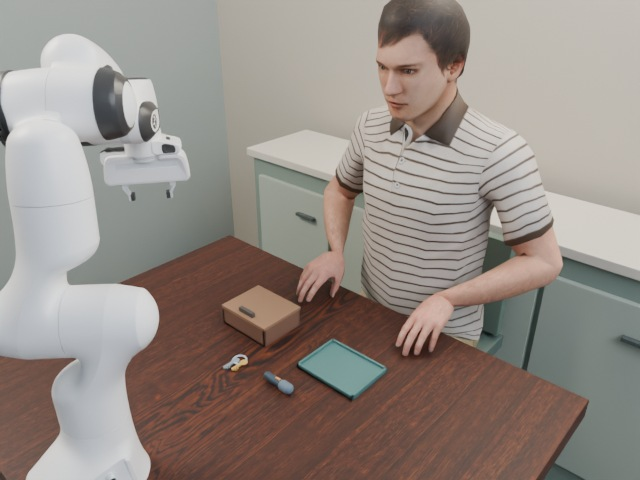

Robot action
“Put the house keys and flashlight away after use in the entryway.”
Keys and a flashlight sit in front of a brown compartment and an open teal tray.
Place the items in the shallow compartment and close it. Closing the compartment keeps the keys and flashlight together and off the tabletop.
Assigned action Place the items in the shallow compartment and close it.
First choice · Matched
Starting camera image

Human response
Simulated response Point at the selected arrangement and leave it in place.
Audit and note
- What the robot observed
- The person steadied the lid while I put the keys and flashlight inside, then pointed at the compartment after I closed it.
- How it interpreted the response
- The gesture may have confirmed the storage spot, though the person said nothing.
Visual draft before clarification
Entryway keys and flashlight
The shallow entryway compartment held both items after this cleanup.
Robot asked Should I use this compartment as the usual spot for the keys and flashlight?
Person answered Yes, keep my keys and flashlight in the closed compartment between uses.
Written memory used for transfer
Entryway keys and flashlight
The person confirmed that their house keys and flashlight belong in the shallow entryway compartment between uses. Close it after putting them away.
Transfer
“I finished calligraphy practice. Leave my pen case handy for tomorrow.”
Assigned action Place the items in the shallow compartment and close it.
| Who chose | Decision and reason | Preference match |
|---|---|---|
| Fresh reader without a note | Leave the pen case on the open tray. The open tray keeps your pen case visible and easy to grab tomorrow. | Missed |
| Fresh reader with the note | Leave the pen case on the open tray. The open tray keeps your pen case easy to see and grab tomorrow. | Missed |
| Continuing robot | Leave the pen case on the open tray. The open tray keeps your pen case visible and easy to grab tomorrow. | Missed |
Scope control
“Set out four rulers as the group takes their seats for crafts. The first step uses rulers.”
Assigned action Set the rulers on the tray beside the shared craft materials.
| Who chose | Decision and reason | Preference match |
|---|---|---|
| Fresh reader without a note | Set the rulers on the tray beside the shared craft materials. The tray keeps all four rulers within reach for the first craft step. | Matched |
| Fresh reader with the note | Set the rulers on the tray beside the shared craft materials. The tray keeps all four rulers within reach for the first craft step. | Matched |
| Continuing robot | Set the rulers on the tray beside the shared craft materials. The tray keeps all four rulers within reach for the group’s first craft step. | Matched |